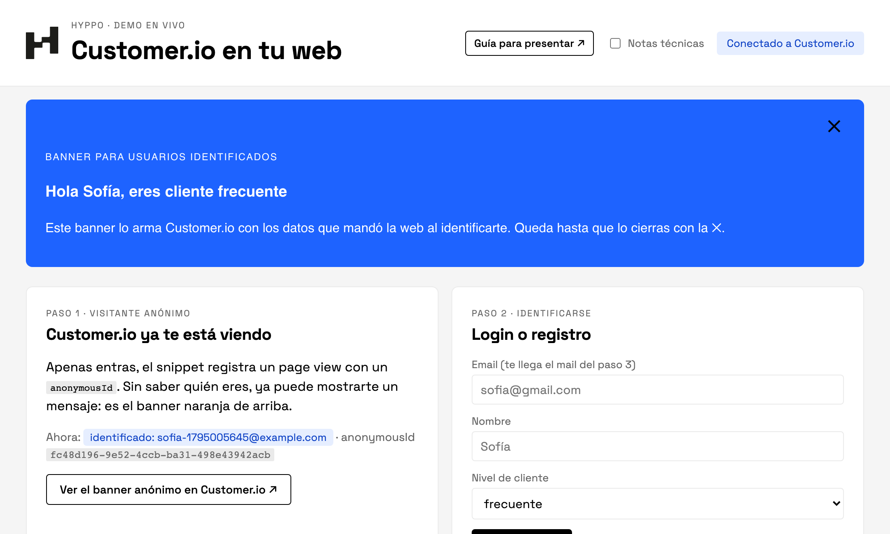
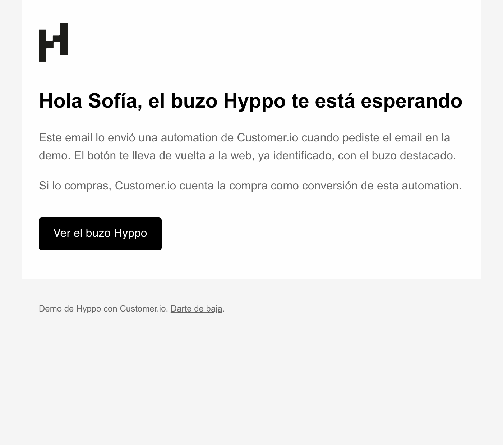

Antes de la reunión
- Abrí la demo en el navegador que vas a compartir y bajá el bloqueador de anuncios para el sitio (Brave Shields, uBlock). Si está activo, arriba a la derecha dice "Bloqueado".
- Hacé el recorrido una vez con tu email. El in-app tarda hasta un minuto en llegar la primera vez a cada navegador; después es instantáneo.
- Tocá Empezar de nuevo (arriba del panel negro) para arrancar la reunión como visitante anónimo.
- Dejá Customer.io abierto y logueado en otra pestaña: los links "↗" de cada paso abren ahí.
- Tené a mano tu casilla de email para el paso 3.
La demo usa el workspace "Hyppo" (186015). Todo lo que pase en la reunión queda en ese workspace, con perfiles demo-….
Paso 1 · Visitante anónimo
"Customer.io te reconoce antes de saber quién sos"

- Qué decir
- Apenas alguien entra a la web, Customer.io le asigna un ID anónimo y ya puede mostrarle mensajes. Este banner lo ve cualquier visitante, sin login.
- Qué hacer
- Señalá el banner naranja y el panel negro de la derecha: el page view ya salió.
- Qué mostrar en Customer.io
- "Ver el banner anónimo ↗": el broadcast, sus vistas y su conversión (que el visitante se identifique).
Paso 2 · Identificarse
"Cuando se registra, el mensaje cambia solo"

- Qué decir
- Al loguearse, todo lo que hizo como anónimo pasa a su perfil. El banner se arma con sus datos: si cambia el plan, cambia el mensaje.
- Qué hacer
- Completá email, nombre y plan y tocá "Identificarme". La página avisa y se recarga en 15 segundos con el banner azul, que queda hasta que lo cerrás con la ✕.
- Qué mostrar en Customer.io
- "Ver tu perfil ↗": el perfil recién creado, con los atributos y la actividad de antes de identificarse.
Paso 3 · Email → web → conversión
"Un email distinto para cada cliente, que trae ventas y se puede medir"


- Qué decir
- Una acción en la web dispara un email, y Customer.io elige qué mandar según el plan: a los free les ofrece la remera; a pro y enterprise, el buzo. Encima, el email del buzo está en un test A/B de asunto: la mitad recibe uno y la mitad otro, y Customer.io dice cuál vende más. El link vuelve a la web reconociendo a la persona, aunque abra el mail en otro dispositivo.
- Qué hacer
- "Mandame el email", abrí el mail (llega en uno o dos minutos), tocá el botón y comprá el producto destacado. Para mostrar las dos ramas, identificate primero como pro y después, con otro email, como free.
- Qué mostrar en Customer.io
- "Ver la automation y sus conversiones ↗": la rama por plan, el test y las conversiones de cada email. "Ver el test A/B ↗": los dos asuntos, cuánta gente recibió cada uno y las compras de cada lado.
Paso 4 · In-app
"Responder en el momento, dentro de la web"

- Qué decir
- Cualquier evento de la web puede disparar un mensaje en pantalla, sin tocar código: el marketing lo arma en Customer.io.
- Qué hacer
- "Disparar el in-app": aparece un modal en unos segundos.
- Qué mostrar en Customer.io
- "Ver la automation ↗": el trigger por evento y el mensaje.
Paso 5 · Web push
Pendiente
Web push está en alpha en Customer.io y falta que lo habiliten en el workspace. Hasta entonces, los botones quedan deshabilitados: si preguntan, se puede contar que existe y que el clic en el push abre sus métricas.
Si algo no aparece
- "Bloqueado" arriba a la derecha: bajá el bloqueador de anuncios y recargá.
- El in-app no llega: la primera vez en un navegador puede tardar un minuto. Mientras tanto, mostrá la automation en Customer.io.
- El banner azul no aparece, o muestra datos de una prueba anterior: cerralo con la ✕ y recargá: los banners de identificaciones anteriores salen de a uno, el más viejo primero. Si repetís la demo, conviene usar otro email.
- El email no llega: buscalo en spam; el remitente es
hello@hyppo.io.